1 + 1[1] 2Yeong Chan Lee
February 20, 2023
R은 통계 프로그래밍 언어로써 데이터 처리, 분석 기법, 시각화 등 관련한 유용한 라이브러리를 담고 있습니다. 배우기에 앞서 Rstudio를 통해 R을 다루는 법을 배워봅시다.
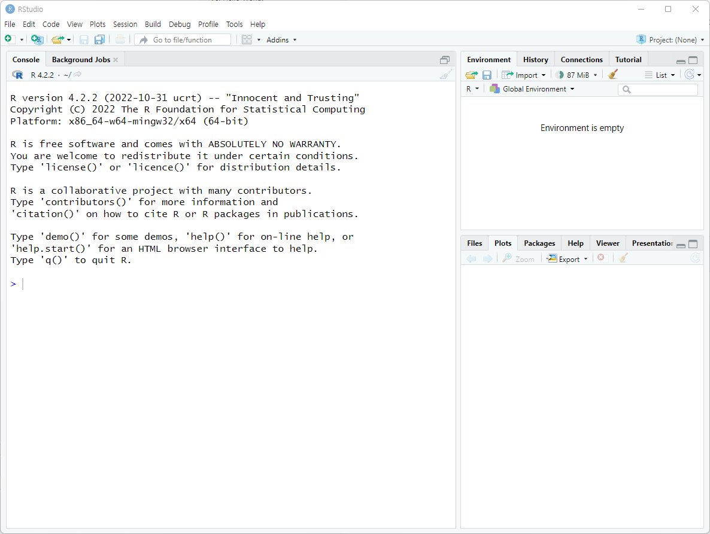
처음 보시면 이런 창이 보이실 것입니다.
Console 창에 > 다음으로 입력할 수 있습니다.
쉽게 1+1을 입력해봅시다.
다음은 Hello World! 를 print 해봅시다.
다음은 Hello World! 를 print 해봅시다.
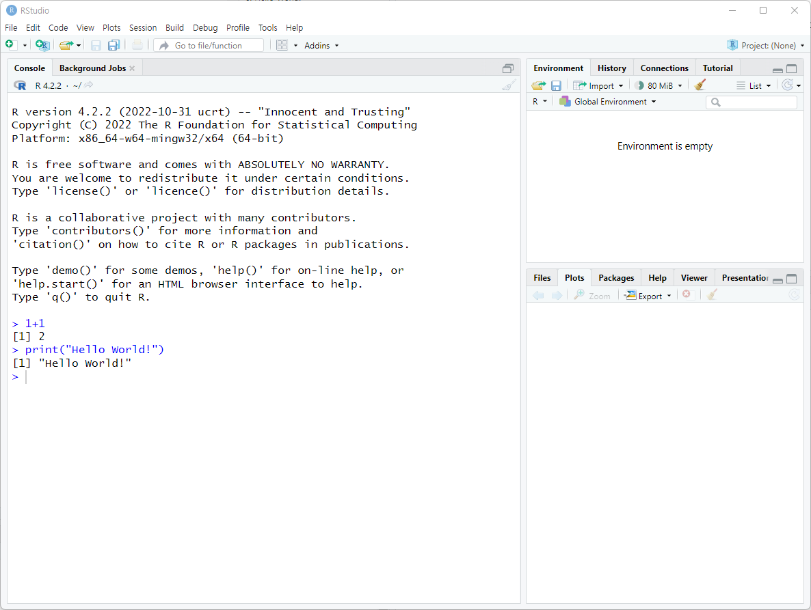
잘 하셨습니다.
연구 데이터와 코드를 효율적으로 관리하기 위해 폴더 관리에 대한 간단한 규칙을 만들고 시작하는 것이 좋습니다. 동시에 R을 효율적으로 사용하려면 Rstudio의 프로젝트를 활용하시는 것이 좋습니다.
저는 보통 연구 이름으로 폴더를 생성하고 하위 폴더로 ‘code’, ‘data’, ’results’로 만듭니다. 여기서는 ’sample_study’라는 연구로 하위 폴더를 아래와 같이 만들어보았습니다.
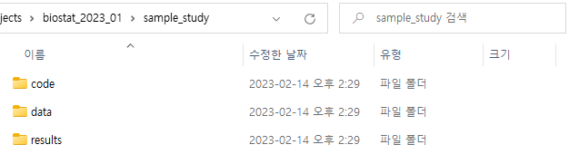
연구를 진행하다보면 데이터가 추가되거나 새로운 데이터 처리, 분석 방법을 적용할 수 있고, 연구가 끝난 후에도 재현을 위해 다시 분석할 수 있기 때문에 본인만의 적절한 분류 체계, 네이밍 규칙을 만들고 코드와 데이터를 잘 관리하는 것이 매우 중요합니다.
이제 이 디렉토리를 기준으로 Rstudio에서 제공하는 프로젝트를 만들어 봅시다.
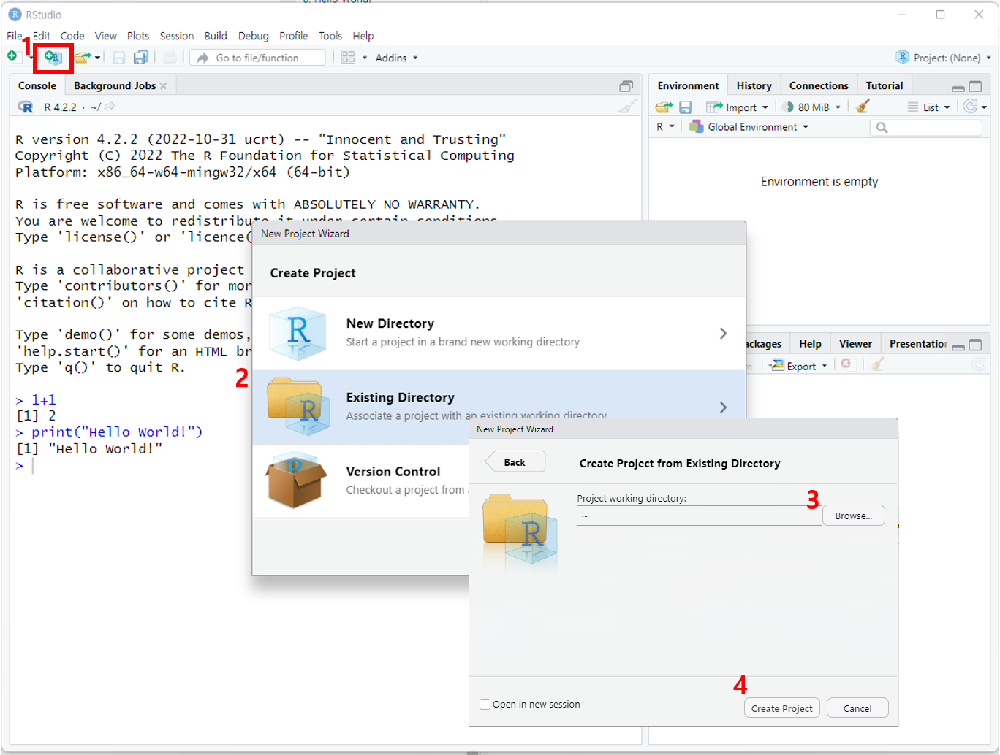
빨간 박스의 R프로젝트 생성 버튼을 누르고 Existing Directory누르고 sample_study 폴더를 찾아 입력하고 Create Project를 합니다.
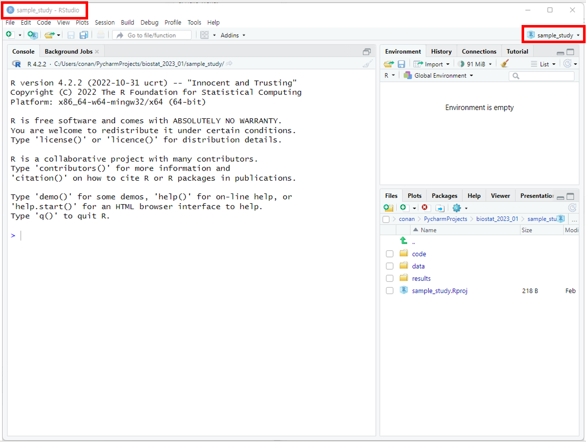
sample_study라는 새로운 프로젝트가 생성된 것을 확인 할 수 있습니다. 안타깝게도 우리는 많은 연구를 동시에 진행, 분석해야 하는데 새로운 연구를 할 때마다 프로젝트를 만들어 저장하게 되면 연구간 코드가 섞일 일 없이 관리 할 수 있습니다.
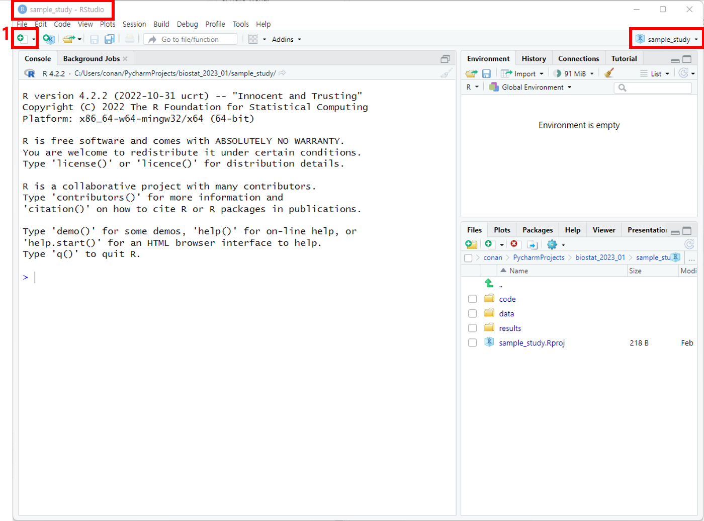
1 New File -> R Script 버튼을 눌러 스크립트 창을 띄워봅시다.
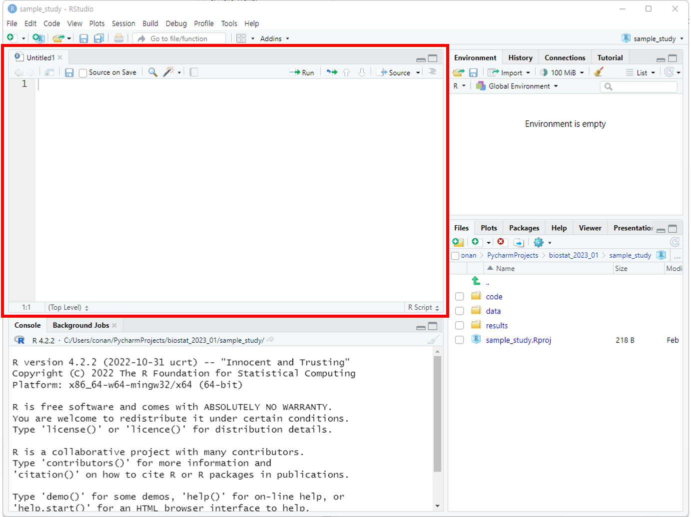
보통 여기 script로 코드를 작성하고 밑 Console 창에서 결과를 확인합니다.
처음에 입력했던 것과 같은 코드를 스크립트에 입력하고 Ctrl+Enter를 해봅니다.
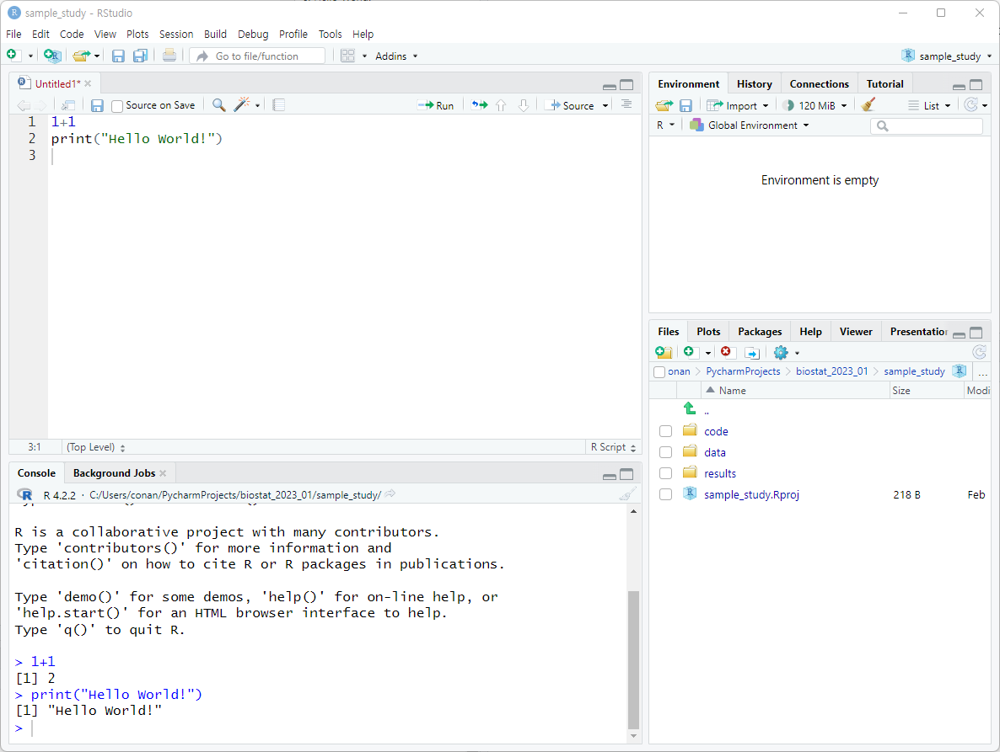
Ctrl+Enter는 각 코드를 line by line 으로 실행시켜 console 창에 결과를 띄웁니다.
여러 줄을 한 번에 하고 싶다면 block 처리한 후 Ctrl+Enter를 합니다.
이제 내가 만든 스크립트를 저장해봅시다. Ctrl+S를 합니다.
code 디렉토리가 있으니 거기에 저장해볼까요? 저는 hello_world.R로 저장하였습니다.
만든 후에 오른쪽 하단 Files view에서 code 디렉토리를 눌러봅시다.
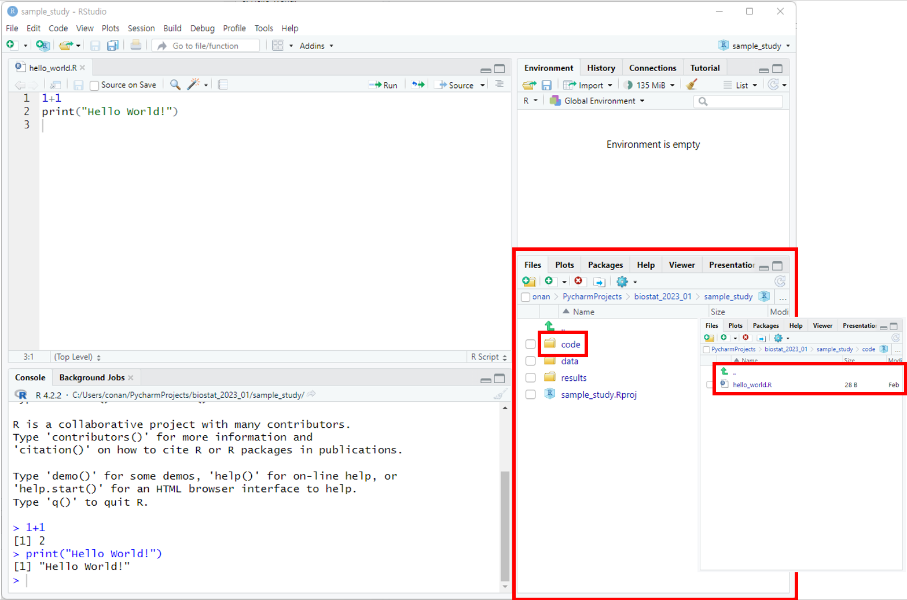
hello_world.R이 저장된 것을 확인할 수 있습니다.
이번엔 R을 종료하지 않고 프로젝트를 빠져 나가볼까요?
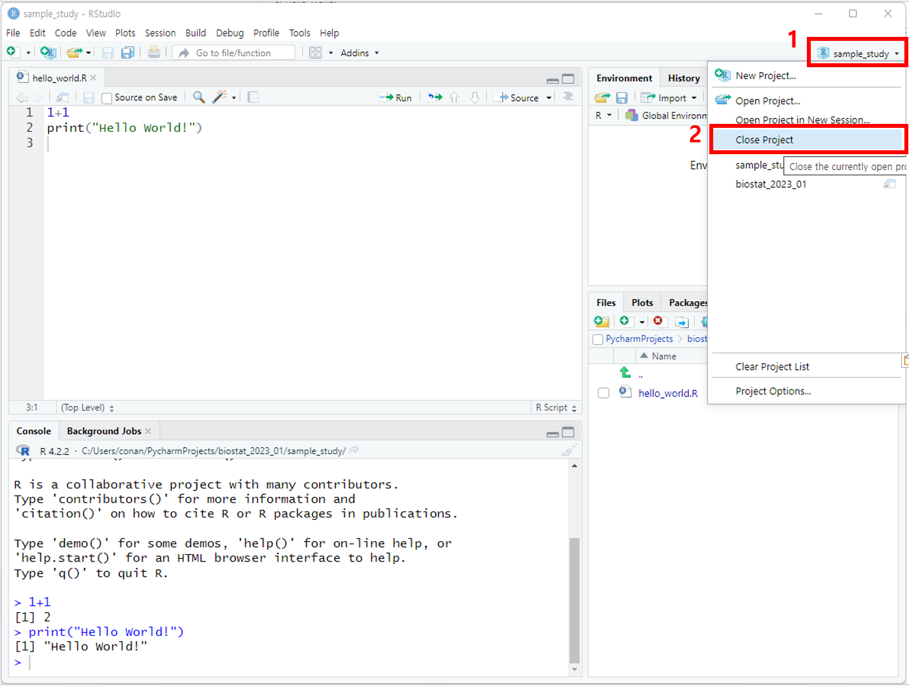
오른쪽 상단 프로젝트 버튼을 누르고 Close Project를 누릅니다. 그러면 처음 보았던 화면처럼 Project: (None)으로 프로젝트가 할당되지 않은 R studio 화면을 볼 수 있습니다.
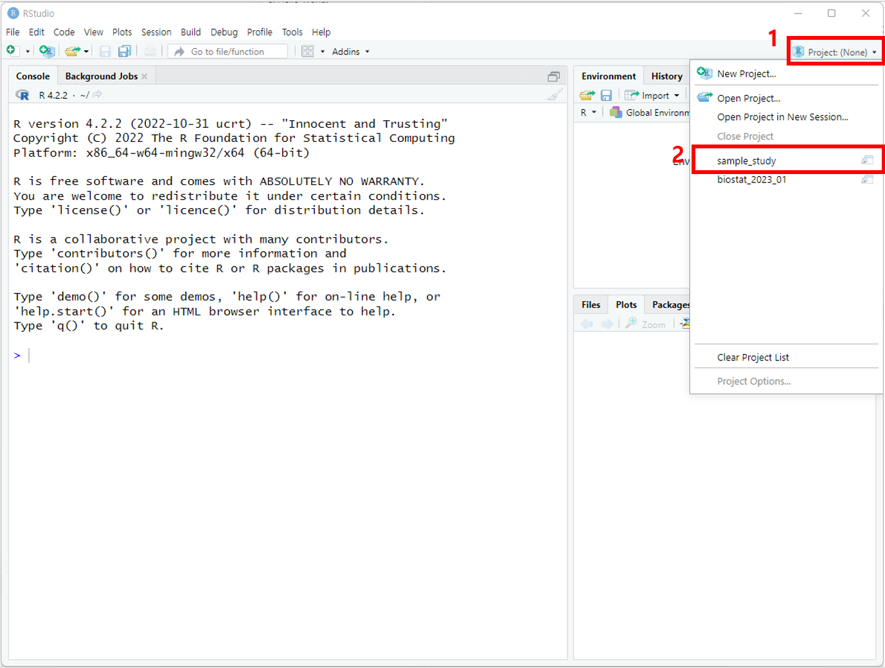
다시 오른쪽 상단 프로젝트 버튼을 누르고 sample_study 프로젝트를 열어봅니다.
그러면 sample_study 프로젝트와 밑에 코드들이 다시 열리는 것을 볼 수 있습니다.
수고하셨습니다. 😃
install.packages(“tidyverse”) 를 입력하여 tidyverse 패키지를 깔아보세요.
잘 설치가 되면 추가로 data.table과 moonBook을 설치해봅시다.
모두 설치되면 library()함수로 라이브러리를 열어봅시다.
── Attaching packages ─────────────────────────────────────── tidyverse 1.3.2 ──
✔ ggplot2 3.4.1 ✔ purrr 1.0.1
✔ tibble 3.1.8 ✔ dplyr 1.1.0
✔ tidyr 1.3.0 ✔ stringr 1.5.0
✔ readr 2.1.4 ✔ forcats 1.0.0
── Conflicts ────────────────────────────────────────── tidyverse_conflicts() ──
✖ dplyr::filter() masks stats::filter()
✖ dplyr::lag() masks stats::lag()
Attaching package: 'data.table'
The following objects are masked from 'package:dplyr':
between, first, last
The following object is masked from 'package:purrr':
transpose성균관대학교 삼성융합의과학원 의생명통계학 2023년 1학기 - 이영찬